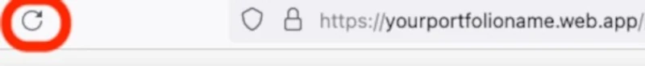

Google Firebase Database for a Website
Overview
Scenario
In this scenario, you were recently hired as a new intern. The first project is to create a website and database that allows you to create a list of projects that you are working on. Your boss wants you to deploy it on Google Firebase hosting with a Firebase database.
Business Requirements
- Track projects for clients
Project Requirements
- Use an automated scalable web hosting solution
- Use a non-relational database to store project information
- Use Google services if possible
Table of Contents
Instructions
Watch the video instead Firebase Database Setup Video
Step 1: Install Visual Studio Code and Node.js
Hopefully, you already have Visual Studio Code and Node.js installed on your computer. If not, ask ChatGPT how to install them and follow the instructions from ChatGPT.
Step 2: Open Your Existing Project in Firebase
- Sign into the Google Firebase console using your BYU-Idaho email address (the email address with numbers, for example: bos24011@byui.edu).
Trouble signing in? Open my.byui.edu, click “Profile”, scroll down to “Campus Email”, and use that email for the Google Firebase sign in


- If that doesn’t work, use a personal Gmail account.
Click on YourName Portfolio/Project
Click Firestore Database under Build (you may need to expand the Build section by clicking on it).

Click Create Database

Select nam5 for the location of the United States (This should be selected by default)

Click Next
Leave the defaults Start in production mode and then click Create
Step 3: Create a Collection of Projects
To create your database for your website, you would design your database based on collections of what you will store. Some examples of collections might be users, projects, movies, etc. This was the video about it from the preparation material: https://www.youtube.com/embed/jm66TSlVtcc?start=1&rel=0
If you don’t see the screen below, click🗘 on your browser. Click Start Collection

Put the Collection ID as projects and click Next

Click Auto-ID

Clicking Auto-ID will auto generate a Document ID like this image below.
Let’s add some fields. Type title for the field and leave the type as a string if that is the data type that you want.
- FYI - Use string for text such as letters, words, and paragraphs.
- FYI - Use number for digits such as 1, 23, 5555, 44.44, etc.
- FYI - Use boolean for true or false
- We will just use strings for now

Click Add Field

Type description and select string
Make sure to click Save
You should only see one item in your list for now. You will add more items through the website later.
Step 4: Add an app or website connection to the database
Go to the Project Overview settings by clicking on the gear in the top left corner:

Select Project settings
Click Add App

Select the icon for the HTML or Website web app (we need this to connect the html website code with our database):
Put the name of your database, like portfoliodb (db is for database)

Click Register app
Select Use a <script> tag - IN PRODUCTION, it would be better to use npm
Click Continue to console. We will get the code later.
Step 5: Link the database to the hosting
Go to the Project Overview settings by clicking on the gear in the top left corner
Select Project settings
Under the General tab, scroll down to the bottom and click on Link to a Firebase Hosting site
Select your site from the drop down and click Link

Copy the configuration by selecting the Config (option #2) in the image below

Click Copy to Clipboard (option #3) in the image above. We are going to copy that code into the config.js file that we will obtain in the next step.
Step 6: Put the database code in your website file (projects.html)
In Visual Studio Code, open the project we have been working on - it might show up under Recent and find the public folder from last week.
Alternatively, you could follow the steps again from last week and open a New Visual Studio window with a new folder and make a new Firebase Project on Google.

ChatGPT generated some of these files. We are going to just download them and put them in your project to save time and possible variations from ChatGPT. If you would like to figure it out on your own, that would be great.
Open Visual Studio Code and download this file for your operating system:
Copy the file into your project folder (make sure it is at the highest level in your project folder) and run it in the Visual Studio Code terminal
(Windows) Run it with: ./week5.bat
(Mac/Apple) Run the following command in VS code: chmod 755 ./week5.sh
(Mac/Apple) Run it with: ./week5.sh
week5.sh contains the following commands. If executing week5.bat/week5.sh on your computer didn’t work, you may need to execute the following commands:
curl -O https://byui-cloud.github.io/itm101-course/week05/firestore.rules cd public curl -O https://byui-cloud.github.io/itm101-course/week05/config.js curl -O https://byui-cloud.github.io/itm101-course/week05/projects.html mkdir styles cd styles curl -O https://byui-cloud.github.io/itm101-course/week05/styles.css cd .. cd ..
Replace the contents of the file called
config.jsin your public folder and paste the code we obtained above that contains your api key and configuration for your firestore database. It should look like this but with your URL and key:In Visual Studio, double click the config.js file we just made in the public folder delete all of the contents of the file (or press CTRL + A to select all and then backspace/delete)
Then, paste the code from above into the file or click Edit > Paste in the menu (or press CTRL + V)
Save the file with File > Save in the menu (or press CTRL + S)
This HTML code is to provide the text and structure for the webpage
Step 7: Check your firebase database security rules
To add new projects/data to your database, the rules need to allow write or save for non-authenticated users (next week we will need authenticated). To fix it, go to the database by clicking on Firestore Database and then click on Rules

Remove the code that is there and paste this code:
rules_version = '2'; service cloud.firestore { match /databases/{database}/documents { match /projects/{document=**} { allow read, write: if request.auth == null; } } }

Paste your code and a Publish button should appear. Click Publish.
If it still doesn’t work, wait a few minutes and do a SHIFT + 🗘 by pressing SHIFT on your keyboard and click the refresh button in your browser while holding it.
Step 8: Run `firebase deploy` to save changes
In your Visual Studio Code terminal, type firebase deploy (#1 in the image below) and hit enter each time as needed to save your changes in your code and push it up to Google Firebase Hosting.
It should provide you with the URL for your site in the terminal after you run firebase deploy - see the Hosting URL in the red circle above and copy that URL and put it in your browser tab and go to it
Make sure to add the name of your file (ex: projects.html) to the end of the URL like this: https://yourportfolioname.web.app/projects.html
Refresh the URL in your web browser by clicking the refresh button. Hold the Shift key on your keyboard while you are clicking the refresh button to clear your cache.
It should look something like this below, but it could also look very different based on the code generated by ChatGPT. You should be able to add projects to the list and they should pop up at the bottom of the webpage.
Add a project Name and a Project Description to test the functionality and click Add Project and you should see a popup like this below:
If the project is added and appears below the Project’s title, you did it!
Congratulations! You connected a Firebase Hosting with a Firebase Database!
Troubleshooting & Common Problems
Permission Errors or firebase deploy not working:
(Mac/Apple) You may need to run the ‘sudo’ command in front of the firebase installation commands and/or other commands in the terminal.
(Windows) You may need to run the terminal commands in a ‘command prompt’ window or in powershell.
(Windows) When you search for command prompt click on the run as administrator option.
(Windows) Change the execution policy
Search for powershell and run it as administrator.
Then, run this command:Set-ExecutionPolicy RemoteSigned.
If new projects don’t show up, it could be that your database is not connected.
Make sure to connect your database by clicking on the Link to a Firebase Hosting site
Select your site from the drop down and click Link
If new projects don’t show up, it could be that your database permissions are not working.
- To fix it, go to the database by clicking on Firestore Database and then click on Rules
- Remove the code that is there and paste this code:
rules_version = '2'; service cloud.firestore { match /databases/{database}/documents { match /projects/{document=**} { allow read, write: if request.auth == null; } } }
- Paste your code and a Publish button should appear. Click Publish.
If it still doesn’t work, wait a few minutes and do a SHIFT + refresh by pressing SHIFT on your keyboard and click the refresh button in your browser while holding it.
Permission Errors or firebase installation not working:
- (Mac/Apple) You may need to run the ‘sudo’ command in front of the firebase installation commands and/or other commands in the terminal
- (Windows) You may need to run the terminal commands in a ‘command prompt’ window instead or in powershell.
- (Windows) When you search for command prompt click on the run as administrator option.
If firebase doesn’t deploy
- Make sure that you select the correct options above when running firebase init. Double-check that you selected the appropriate options.
The website doesn’t load the styles, but only the words appear
- Make sure the
index.htmlfile has a link to thestyles.cssin the <head> section:
<link rel="stylesheet" href="styles.css"> - Check to see if the styles.css file is in the same folder as the index.html folder or make sure the link to it has the folder listed if needed:
<link rel="stylesheet" href="css/styles.css">
If you cannot get node to finish working
- You may need to create a package.json file and paste this into it:
{ "dependencies": { "express": "^4.18.2", "firebase": "^10.7.2", "firebase-admin": "^12.0.0" } }
If you cannot get firebase to finish setting up and installing
- You may need to create the file firebase.json and paste this into it:
{ "hosting": { "public": "public", "ignore": [ "firebase.json", "**/.*", "**/node_modules/**" ], "rewrites": [ { "source": "**", "destination": "/index.html" } ] }, "firestore": { "rules": "firestore.rules", "indexes": "firestore.indexes.json" } }
Learning More - Expand Your Database
Add more details to your database or make your site look better.
Add more fields/documents, etc.
Add a database to your portfolio page you made the previow week.
Learning More - MySQL Databases
ITM 111 Introduction to Databases and ITM220 SQL teach how to use SQL databases that many companies use
- Want to learn more about SQL databases? Take ITM 111 or ITM 220.
- Want to learn more about the Cloud? Take ITM300 or ITM310.
- Build your resume: Deployed a Google Firebase Javascript, HTML, and CSS website and connected it with a Firestore database.
- Build your resume (FUTURE project): Try connecting your website with a mysql or postgresql database.